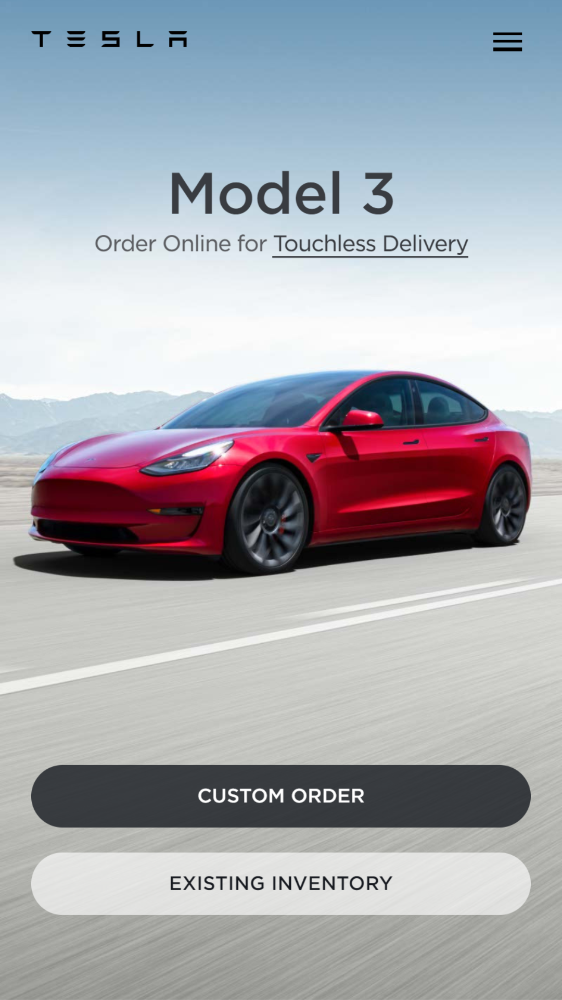

Visual Hierarchy
Tesla
https://www.tesla.com/ Visual Hierarchy illustrates that when people go a website, what they see things in order. Of course, if the object is big, people are going to see it first. Therefore, the size comes to play an important role for this principle. When designs use this technique, they want people to see things in the order they. Tesla.com is a great example of this.
If you go on their website, the first thing you will is a picture, and then some words with great size will pop up later. Just to inform you something about their product. After that, if you like it, you will want to order it. So, the next thing you will see is the order button. That's the frist page, simple and easy to read.
White Space and Clean Design
J.P. Morgan
https://www.jpmorgan.com/globalTo make a website visual appealing, we don't need million elements. Instead, we just need a couple of elements with reasonable spaces. With spaces between elements, it just makes the design look clean and easy to read.
Let's take J.P. Morgan's website for an example. Each element in the header spaces out pretty well. You can clearly identify the logo and navigation bar. Also, each nav element has good spacing that you can easily tell each tab, and because those tabs are not too far from each other, you know they are in the same group. The banner box does the same thing. It has a good space, so people can easily browse through its webpage and understand the content.
PARC: Contrast
AT&T
https://www.att.com/When it comes to contrast, we are not just talking about the size like visual hierarchy principle we talked about earily. It also includes colors and font-family.
We can simply take a look at AT&T'S website.It has a white background. If you look at the header, everything presents in black (easy to see), except its logo (blue). This contrast makes people easily to differentiate the logo from the other elements. If you scroll down, you will see they use different colors, font-size and font-family. They also have good spacing between elements/components. Those techniques make a good contrast.